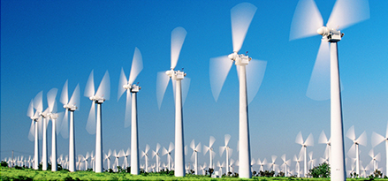

Desventajas de la Energia Eólica

El viento no está garantizado
El viento es relativamente impredecible por lo que no siempre se cumplen las previsiones de
producción, especialmente en unidades temporales pequeñas. Para minimizar los riesgos las
inversiones en este tipo de instalaciones son siempre a largo plazo, con lo que el cálculo del
retorno de éstas es más seguro. Se entiende mejor este inconveniente con un dato: los
aerogeneradores sólo funcionan correctamente con ráfagas de viento entre los 10 y los 40 Km/h.
A velocidades menores la energía no resulta rentable y a mayores supone un riesgo físico
para la estructura.
Energía no almacenable
Se trata de energía que no se puede almacenar, sino que debe ser consumida de manera
inmediata cuando se produce. Eso hace que no pueda ofrecer una alternativa completa al uso
de otros tipos de energía.
Impacto en el paisaje
Los grandes parques eólicos tienen un fuerte impacto paisajístico y son visibles desde largas
distancias. La altura promedio de las torres/turbinas oscila entre os 50 y los 80 metros, con
palas giratorias que se elevan otros 40 metros. El impacto estético en el paisaje a veces genera
malestar en la población local.
Afectan a las aves
Los parques eólicos pueden tener un impacto negativo a la avifauna, especialmente entre las
aves rapaces nocturnas. El impacto en la avifauna se debe a que las palas giratorias pueden
moverse a una velocidad de hasta 70 Km/h. Las aves no son capaces de reconocer visualmente
las cuchillas a esta velocidad, chocando con ellas fatalmente.